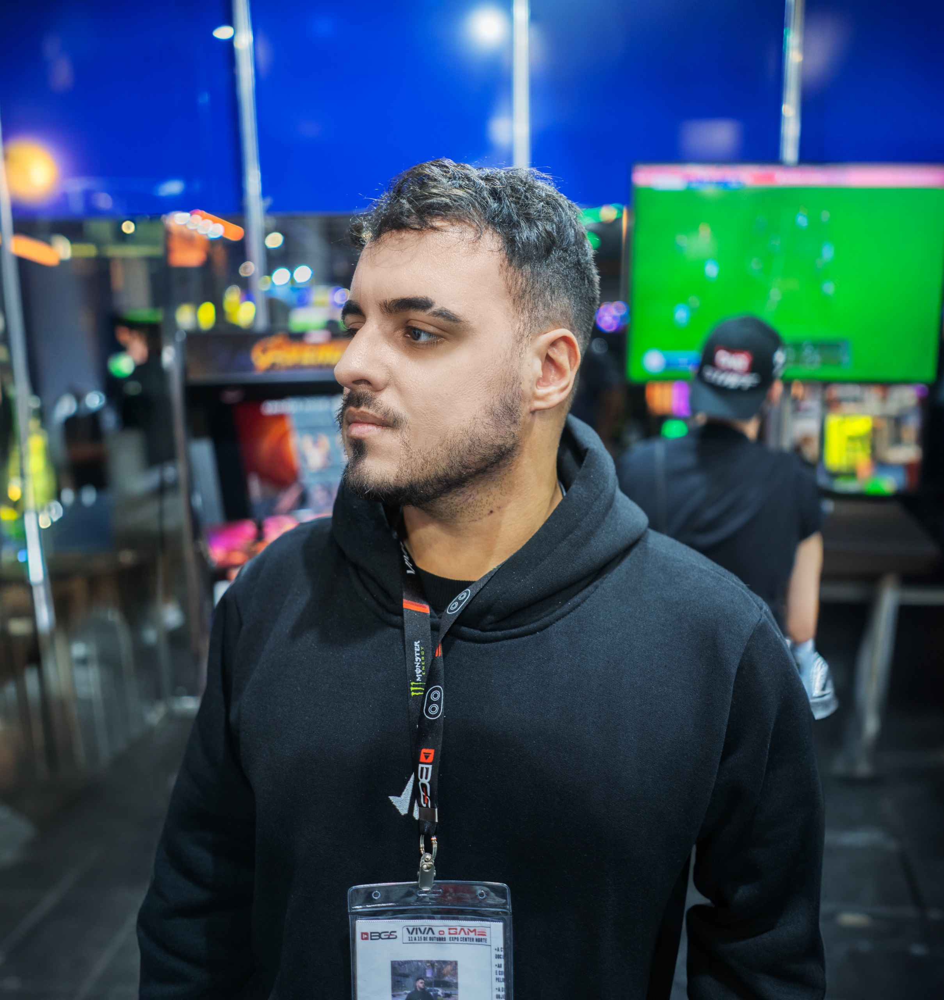
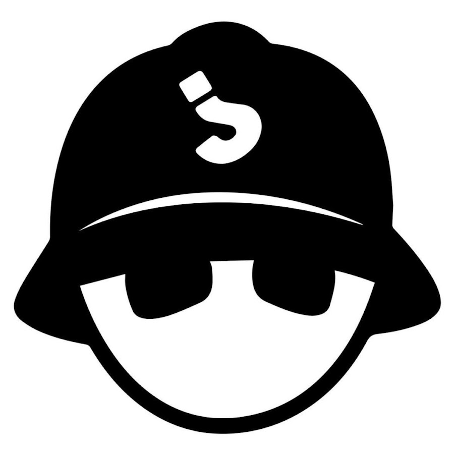

Pro Players
Conheça os jogadores que representam a -SBW- na divisão de Fighting Games.

EliTz
Pro player da divisão Fighting Games da -SBW-, representando a organização no cenário competitivo.
Ver Perfil
Tiger Furious
Player da equipe Fighting Games da -SBW-, atuando no cenário competitivo da organização.
Ver Perfil
D'Lucca
Player da divisão Fighting Games da SaberWolf, participando da construção competitiva da equipe.
Ver Perfil